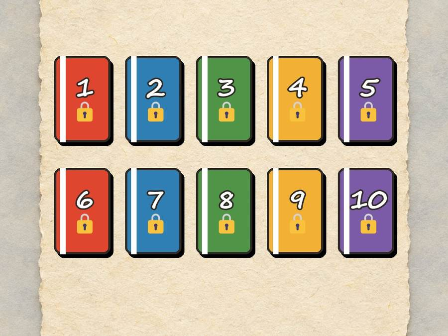
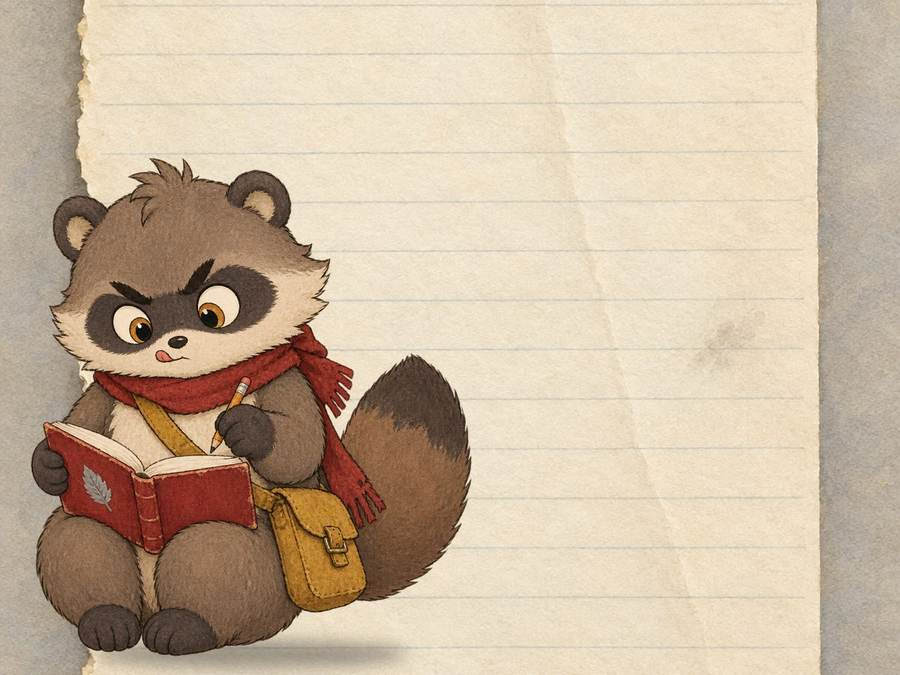
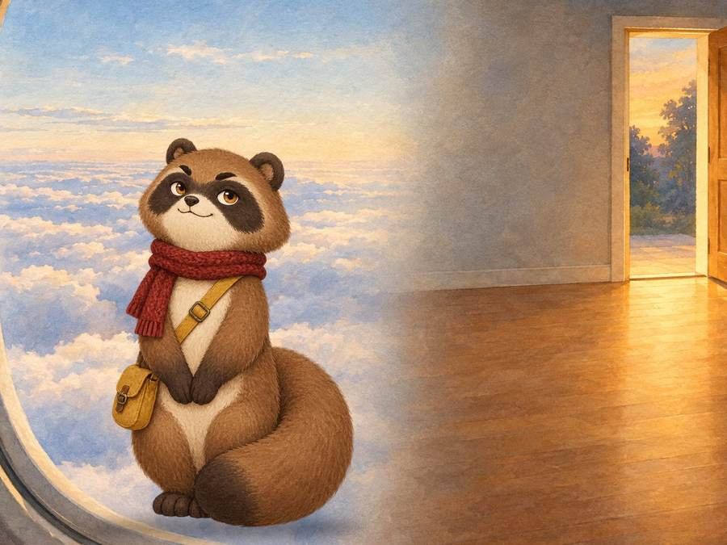
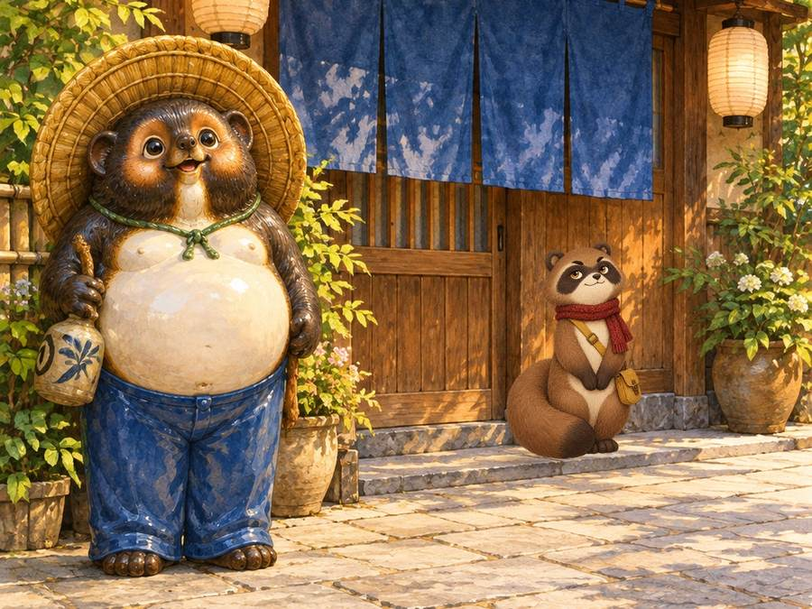
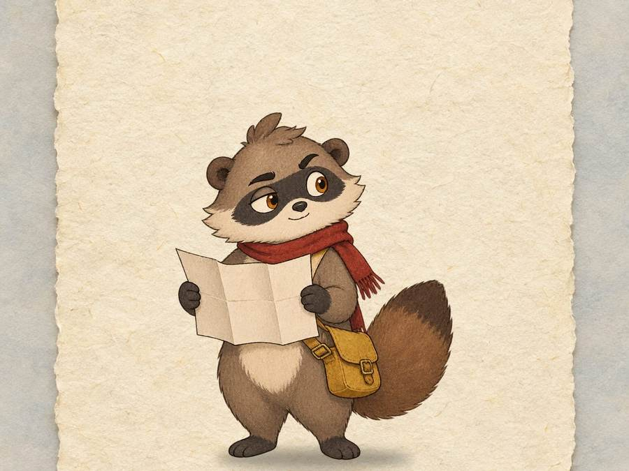

Tomo's Secret Library
Every Tomo book lives here. But first… Tomo has something to tell you. 👀

Uh-oh. Tomo has a problem.
Tomo writes a LOT. Every single night, by flashlight, inside Dad's suitcase. Scribble, scribble, scribble.
By Day 2, the books were piling up so high that Dad picked up the suitcase and said, "Huh. Why is this so heavy? Did I pack a bowling ball?"
Tomo held his breath. And his tummy. And his tail.

So Tomo sent his books home… by magic.
(Grown-ups call this magic "the internet." Tomo calls it "the Very Fast Invisible Mailbox.")
Now every book zooms across the ocean and lands right here, in this secret library, just for you.

Meet the guard: Cousin Pon. 🗿
Someone has to guard the library. So Tomo called his cousin Pon — a big, chubby tanuki statue. In Japan, statues like Pon stand outside restaurants and shops to bring good luck.
Pon takes his job VERY seriously. He opens one book each night at midnight. Not one second early. Not even if you say please. Not even if you say pretty please with a mochi on top.
- 🎩 Pon's straw hat keeps bad luck off his head.
- 👀 His big eyes help him notice things. (Like sneaky readers.)
- 🫃 His big round belly means "stay calm and make good choices."
- 🚆 Pon learned to be on time from Japanese trains. If a train in Japan is just a few minutes late, the station gives riders a note that says "Sorry, our train was late!" to show their teachers or bosses.
Pick a book! 🦝
Open books are ready to read. Locked books show how long until Pon opens them. After you finish a book, tap its circle to give yourself a stamp!

Why stamps? Because JAPAN. 🔴
Lots of train stations in Japan have a special rubber stamp you can press into your own notebook for free. Every station's stamp has a different picture — a castle, a mountain, a famous snack, even a cartoon character.
Some kids (and LOTS of grown-ups) travel all over Japan just to fill their stamp books. It's called a stamp rally.
This library has a stamp rally too. Read a book, then tap its circle on the bookshelf. Can you collect all 11?

Psst… one more secret.
Pon whispered something to Tomo. (Pon is a statue, so it was a VERY quiet whisper.)
"There are 11 books on this shelf," said Pon. "But there's a 12th story too. It's not written yet."
"Who's writing it?" asked Tomo.
"Carter and Delaney," said Pon. "It's the story they tell Mom and Dad the minute they walk through the door."